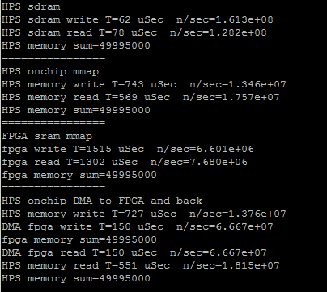
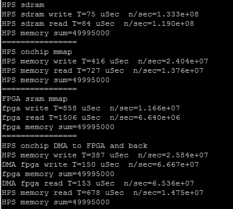
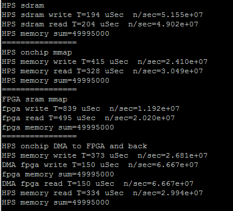

DMA from HPS to FPGA
Memory-mapped transfer from the HPS to FPGA using standard C assignment seems to top out at around seven million 32-bit transctions per second for either read or write. This corresponds to 28 million bytes/sec or about 7% of the advertised bus bandwidth of around 400 Mbyte/sec. Writing directly to mmaped HPS on-chip memory is only about twice as fast, or 13 million writes/second, so my guess is that the rate is partly C overhead, and partly cache access time. Writing directly to an array in MMU managed SDRAM gives read/write rates ten times higher.
A DMA controller in the FPGA, and attached through Qsys to the HPS AXI-slave, can transfer data from HPS on-chip memory to sram on the FPGA at least 10 times faster. However, a DMA controller on the FPGA has to know what absolute memory addresses to use for transfer. The HPS has 64Kbytes of on-chip memory (Hardware Technical Ref Table 12-1) which does not seem to be touched by Linux. The 64Kbytes of on-chip ram starts at address 0xffff0000 and ends at 0xffffffff. This memory can be used as a target for the DMA master. This DMA approach was motivated by a project by robertofem (Roberto Fernandez Molanes, robertofem@gmail.com). Cyclone V and Arria V SoC Device Design Guidelines was useful for optimization.
The Qsys layout has:
The top-level verilog module does nothing by instantiate the Qsys generated system and connect it to i/o pins.
In a real application, there would be verilog code to use the data arriving from the HPS. (ZIP of project)
The HPS code is mostly instrumentation to see how fast everything is happening. The code measures read/write rate for sdram, then for HPS on-chip memory, then code-driven read/write rate for sram on the FPGA, then sets up the DMA transfer and measures the read/write rates. Chapter 25 of the Embedded Peripherals IP User Guide section 25.4.3, tables 223, 224, and 225 show how to set up the DMA control registers. A code snippet shows that the read-master is going to start at the beginning of HPS on-chip ram, the write-master is going to start at the beginning of FPGA sram, the transfer will be 4 bytes wide, and the control word sets the configuration to word transfers, stopping on a byte count.
The putty capture below shows Four different read/write operations for an array of size 10000.
DMA bidirectional HPS <-->FPGA
The Qsys was modified to include two DMA controllers connected so that data can be copied from HPS-to-FPGA and/or FPGA-to-HPS. The only connection differences are reversing the read and write bus-masters for the second DMA. (ZIP)
The HPS code was expanded to define the two DMA transfer controls, and to print the data transfer rates in each direction. The transfer rates are symmetric and both around 270 MBytes/sec. The rate limiting step is loading and reading the onchip RAM on the HPS. For 10000 32-bit transfers, the FPGA DMA read/writes each took 150 microceconds, but loading/reading the onchip memory took 730 and 550 microseconds respectively.

The next step in optimizing the HPS code is to replace the load/read loops with memcpy. Interesting to find out the memcpy is faster with no optimization turned on. The first image is from the program using memcpy compiled with -O3 option, the second with -O0. The direct read/write to SDRAM slows down. Also notice in the second screen dump that direct FPGA sram write takes 1330 microseconds. The DMA read/write takes 300 microseconds, but the overhead of loading the buffer makes the total about 1000 microseconds, not really much faster. (array of size 10000). The DMA transfer rate is about 270 MBytes/sec, but the net transfer rate (including data copy to buffer onship RAM) is about 77 MBytes/sec.

Memory-Mapped FIFO
It is useful to have a structured interface between the HPS and hardware on the FPGA. The FIFOs described can do about 2 million reads or writes per second from the HPS to the FPGA. The Qsys FIFO module is described in the Embedded Peripherals IP User Guide, chapter 15 and 16. A shorter introduction is On-Chip FIFO Memory Core, where you should look at the Avalon-MM Write Slave to Avalon-MM Read Slave version.
-- HPS to FPGA FIFO with feedback via SRAM scratchpad
This example is a step toward full FIFO serial communication between HPS and FPGA. The Qsys layout defines a dual port FIFO with input driven from the HPS bus and input status connected to the HPS light-weight bus. FIFO output is exported to the FPGA fabric to be used by a state machine which takes a word from the FIFO, copies it the the SRAM scratchpad. The SRAM scratchpad is also dual port. The state machine writes SRAM via an exported interface, while the HPS uses a Qsys bus connection to read it. The FPGA state machine repeatedly queries the FIFO status until there is a valid entry then adds one, and copies the result to the SRAM. The HPS test program queries the user for a value, waits for a flag set by the state machine to indicate there is valid data in the SRAM, then prints it. (HPS program, top-level, ZIP)
-- Full FIFO communication: HPS-to-FPGA and FPGA-to-HPS
This example generates two FIFOs in Qsys, one each for two-way communication with the HPS. The FIFO dialog sets up a depth of 256 words, but you could clearly increase this, if necessary. In the dialog, make sure that Allow Backpressure is turned off. One port of each FIFO is exported the the FPGA fabric, where you build state machines to use the data from the FIFO. For this loop-back example, the HPS-to-FPGA receive state machine waits for data in the FIFO, then reads the data word into a buffer and sets a ready flag. The csr-register used to wait is the istatus register, so that only bit 0 (full) and bit 1 (empty) are read. The FPGA-to-HPS state machine waits for space in the FPGA-to-HPS FIFO then writes the data to the FIFO and clears the ready flag. Timing for the FIFO read/write is not specified in the users manual! The HPS-to-FPGA read operation takes TWO cycles but the read-enable line can only be held high for ONE cycle. Holding it high for two cycles results in two reads. The HPS program asks the user for the number of items to send (0<N<500), reads the fill-level of each of the FIFOs, then prints out the returned values and fill levels. Note that for N greater than 256, using block-write, that the FPGA-to-HPS FIFO will fill, then stall, while the HPS-to-FPGA FIFO keeps filling. The performance is about 1.1 MegaWords/sec (4.4 MByte/sec), round trip to the FPGA. This is consistent with requiring about four bus operations/value sent/received (check write FIFO, write, check read FIFO, read). Eliminating the write-check gives about 1.7 MegaWords/sec.
(HPS program, top-level, ZIP)
Note that the nonblocking read/write macros in the HPS program are not well tested.
If you use nonblocking read/write that you must check the return value for success.
The first six macros read out the state of the read/write FIFOs.
#define WRITE_FIFO_FILL_LEVEL (*FIFO_write_status_ptr)
#define READ_FIFO_FILL_LEVEL (*FIFO_read_status_ptr)
#define WRITE_FIFO_FULL ((*(FIFO_write_status_ptr+1))& 1 )
#define WRITE_FIFO_EMPTY ((*(FIFO_write_status_ptr+1))& 2 )
#define READ_FIFO_FULL ((*(FIFO_read_status_ptr+1)) & 1 )
#define READ_FIFO_EMPTY ((*(FIFO_read_status_ptr+1)) & 2 )
// arg a is data to be written
#define FIFO_WRITE_BLOCK(a) {while (WRITE_FIFO_FULL){WAIT};FIFO_WRITE=a;}
// arg a is data to be written, arg b is success/fail of write: b==1 means success
#define FIFO_WRITE_NOBLOCK(a,b) {b=!WRITE_FIFO_FULL; if(!WRITE_FIFO_FULL)FIFO_WRITE=a; }
// arg a is data read
#define FIFO_READ_BLOCK(a) {while (READ_FIFO_EMPTY){WAIT};a=FIFO_READ;}
// arg a is data read, arg b is success/fail of read: b==1 means success
#define FIFO_READ_NOBLOCK(a,b) {b=!READ_FIFO_EMPTY; if(!READ_FIFO_EMPTY)a=FIFO_READ;}
First steps in programming the FPGA (obsolete):
FPGA Programming abstraction for Linux using absolute hardware addresses
The main abstraction from the programming view is to map virtual addresses used by Linux during program execution to physical addresses of memory mapped peripherials. I assume that we are running with root privileges. Opening the device /dev/mem and then using mmapgives access to physical addresses in a limited range determined by the mmap parameters. The code example attempts to blink the HPS LED and read the switch directly attached to port GPIO1bits 24 and 25 respectively. All device addresses are from the HPS Technical Reference Manual. The switch read works, but the LED does not blink. The code was downloaded using copy/paste to the vi editor, then compiled from the console command line with a simple gcc test_led.c -o test_led.
-- Speed test the HPS-to-FPGA bus
If the MSEL switches are set correctly (5'b01010) then the default boot process loads the DE1_SoC_Computer.rbf config file (in /home/root) to the FPGA. Running the increment_led program (part of the UP Linux image in /home/root/increment_leds) controls the red LEDs attached to the FPGA side. A slightly modified version of the demo code increments the FPGA red LEDs as fast as possible. Using the DE1_SoC_Computer.rbf included with the UP Linux image, the max toggle speed 830 KHz, so one add and loop takes 600 nSec, which seems slow. Replacing the register increment with a C variable increment, which is then loaded into the register, doubles the toggle speed to 1.61 MHz, for a loop time of 300 nSec. This implies that the bus transactions are dominating execution speed. Avalon bus speed in this case is 50 MHz, or 20 nSec. The transaction must take about 15 bus cycles to transfer a word from the AXI-to-Avalon bus and Avalon-to-parallel i/o port. (But see below for higher speed connect).
-- First steps in controlling the FPGA.
This example uses serial control on the ARM to set hex digits and led count rate on the FPGA. Two 32-bit parallel ports were added (using QSYS) to the my_first_ hps_fpga example on the DE1-SoC_v.5.0.1_HWrevF_SystemCD. The parallel otuput ports were wired to a small amount of verilog to blink the red LEDs and to drive the first 4 7-seg digits. The QSYS layout made it easy to add a port, and the exported i/o signal bus is named in the verilog header generated by QSYS. If the parallel port is named pio_test, then the exported signal name is pio_test_external_connection, and the signal which appears in the *.v file is pio_test_external_connection_export. The signal is added to the top-level soc-system module instance.
soc_system u0 (
// === added BRL4 ===
.pio_led_external_connection_export (count_control),
.pio_test_external_connection_export (hex_control),
// === end add ===
.memory_mem_a ( HPS_DDR3_ADDR), // memory.mem_a
.memory_mem_ba ( HPS_DDR3_BA), // .mem_ba
.memory_mem_ck .....
The offsets for the LEDs and hex digits used in the C code are the offsets specfied in the QSYS layout.
The C code, top-level module, and Quartus archive.
A slightly cleaner version puts the hex-digit decoding into hardware and simplifies the C program.
The C code, top-level module, and Quartus archive. The QSYS layout is unchanged
Copyright Cornell University January 25, 2019.
{kind=link}
{kind=link}
{kind=link}
{kind=link}
{kind=link}
{kind=link}
{kind=link}
{kind=link}
{kind=link}
{kind=link}
{kind=link}